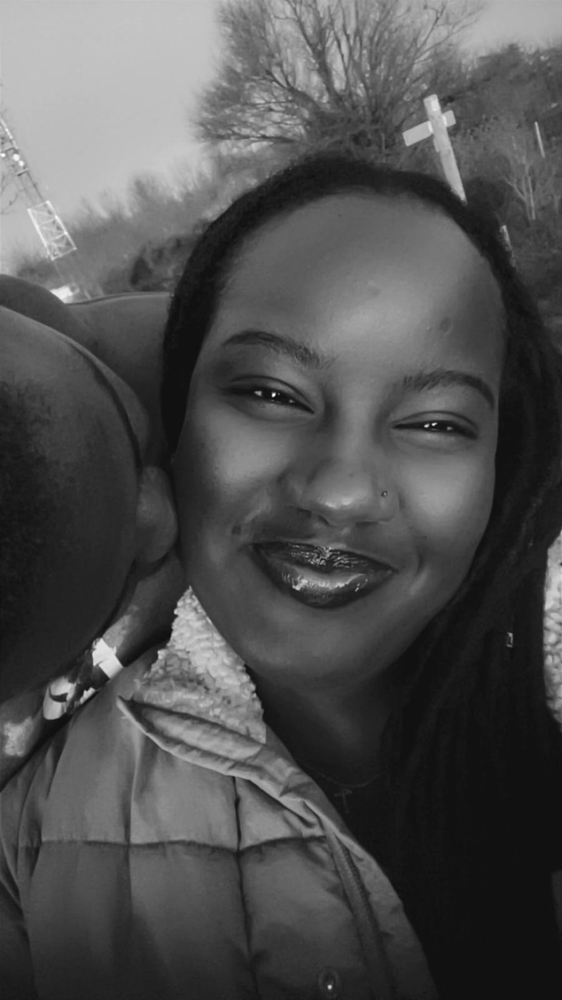
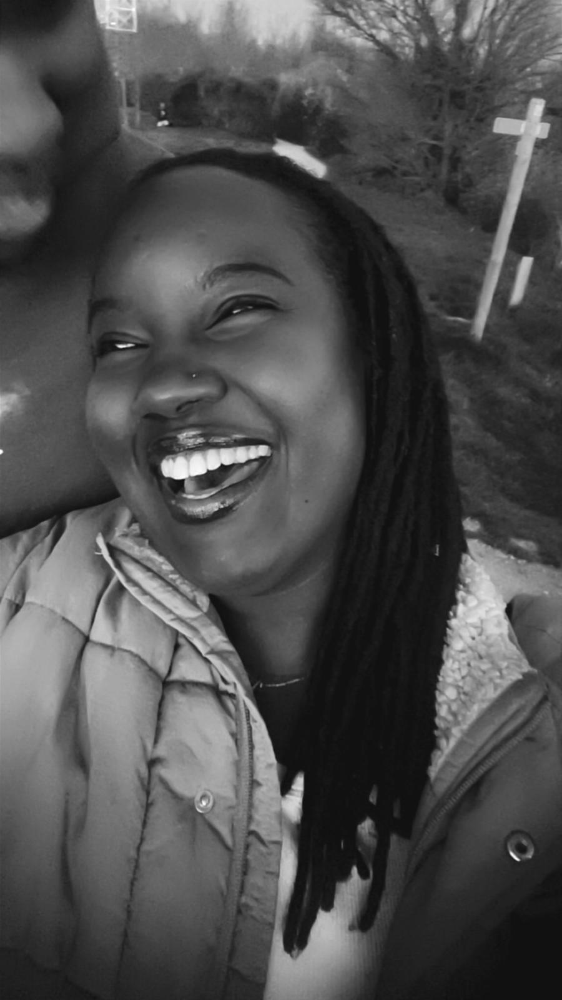
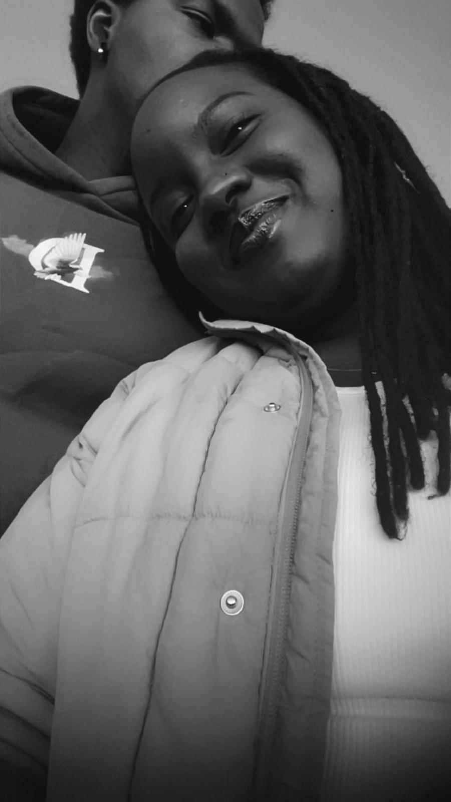
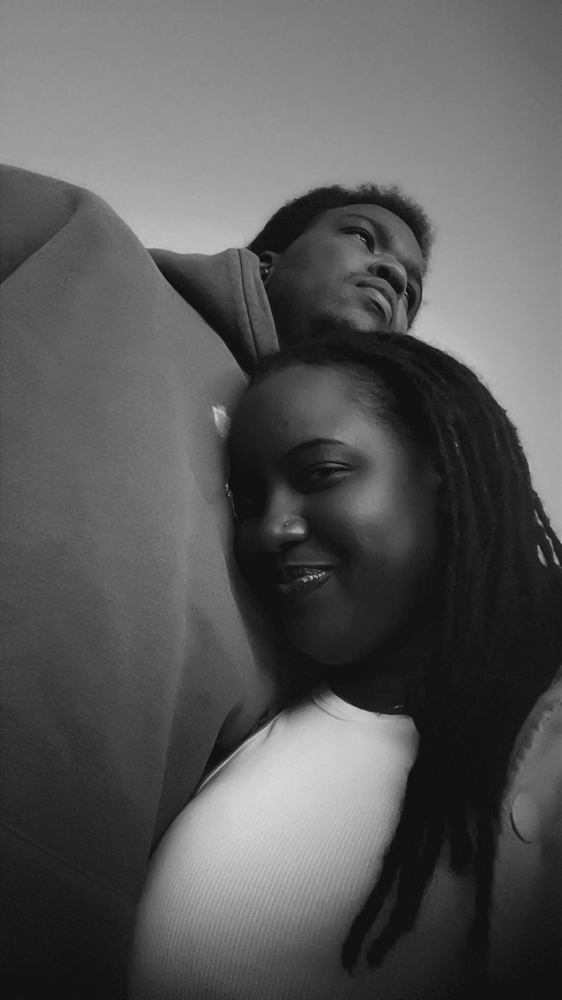
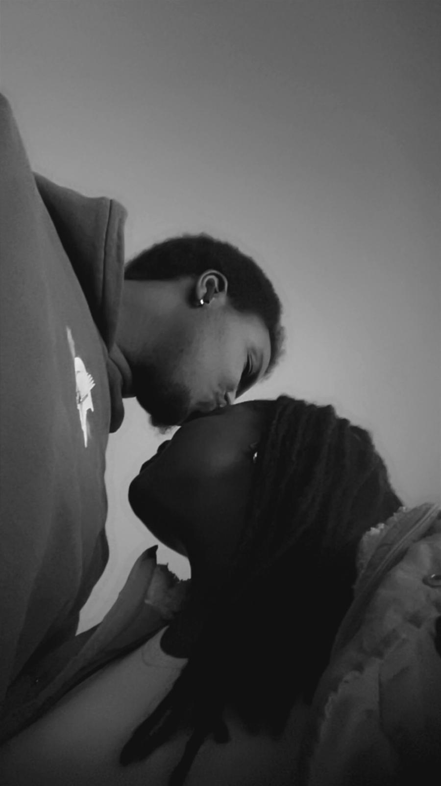
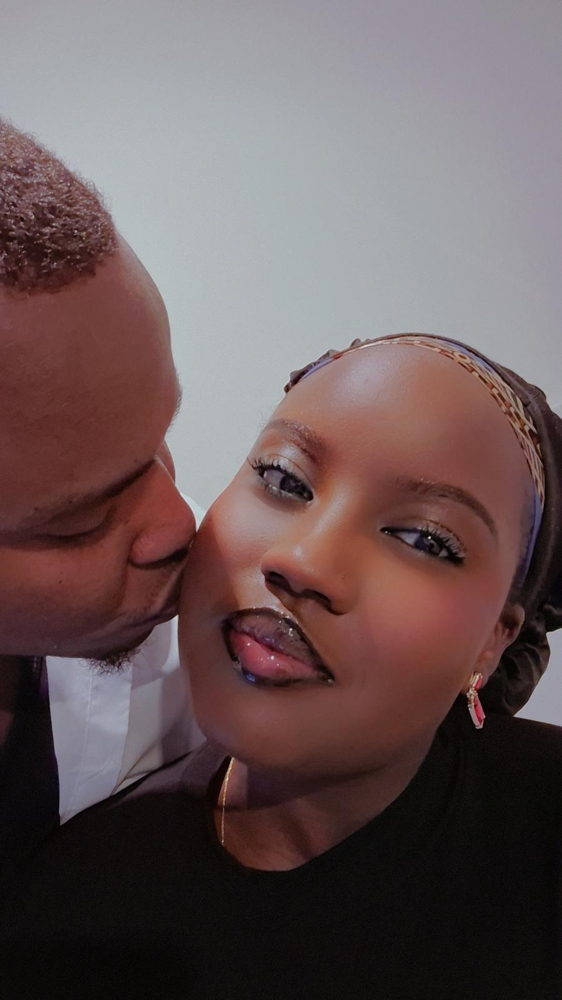
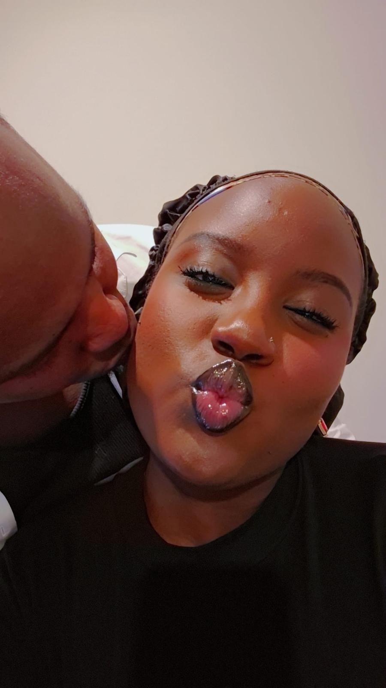
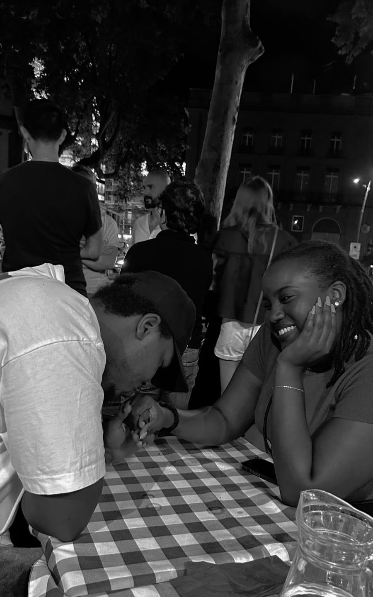
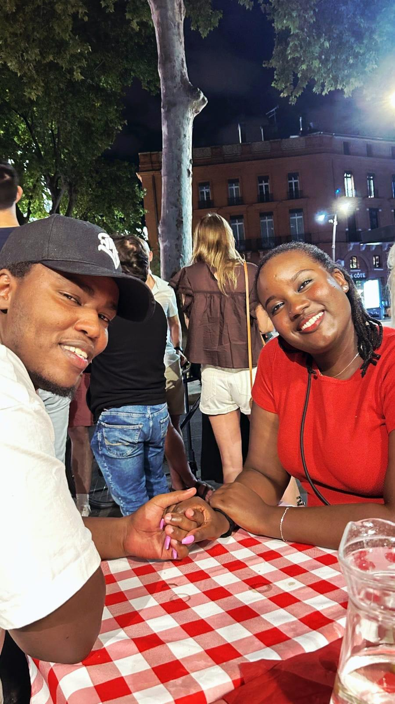
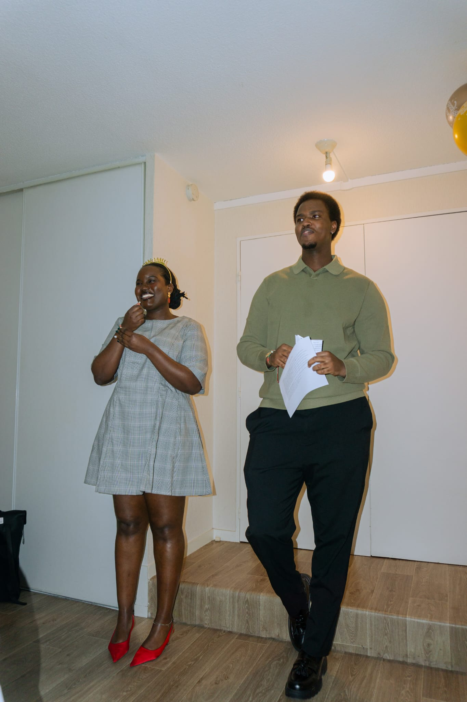

Prête ?
Même à distance, tu restes mon endroit préféré.
Ce fameux 8 mars où tout à commencé, quand j'y pense ça me fait sourire. Depuis ce jour, chaque moment passé avec toi est un trésor que je chéris. Notre amour a grandit sans que nous même on s'en rende compte et c'est ce que j'aime le plus, on a pas besoin de prétendre qui on est pas, c'est authentique.
Même si la distance nous sépare, mon amour pour toi grandit chaque jour. Je suis tellement fier de toi et de tout ce que tu accomplis. Je sais que tu es forte et capable de surmonter tous les défis qui se présentent et se présenteront à toi. Je suis là pour toi, même à des kilomètres de distance, et je crois en nous. Je t'aime plus que les mots ne peuvent le dire, et je suis impatient de te revoir bientôt. Je t'aime fort ❤️.
Je chéris ce jour où le bon Dieu a décidé de nous réunir, et je suis tellement reconnaissant de t'avoir dans ma vie. Chaque jour sans toi est un jour de plus à t’aimer, et je suis impatient de construire notre avenir ensemble. Je t'aime mon amour, et je suis fier de toi, peu importe la distance qui nous sépare. Je prie le seigneur de te protéger et de te guider dans tout ce que tu entreprends, et je suis là pour toi, toujours. Je t'aime fort ❤️.










Ce n’est pas un au revoir… C’est juste une nouvelle façon de s’aimer.